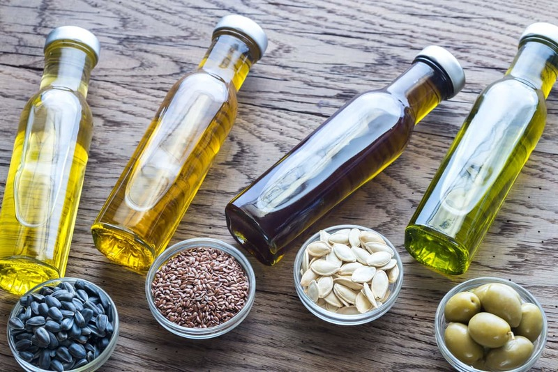

อาหารหมู่ที่ 5 ไขมัน
สำหรับอาหารหมู่ที่ 5 นั้นประกอบไปด้วยกะทิมะพร้าว น้ำมันรำ น้ำนมถั่วเหลือง และน้ำมันปาล์ม เป็นต้น ซึ่งอาหารประเภทนี้จะมีส่วนในการให้สารอาหารประเภทไขมันแก่ร่างกาย จึงทำให้ร่างกายมีการเจริญเติบโต อีกทั้งร่างกายจะเกิดการสะสมพลังงานที่ได้จากอาหารประเภทนี้ไว้ใต้ผิวหนังตามส่วนต่างๆ ของร่างกาย เช่น บริเวณสะโพก และบริเวณต้นขา เป็นต้น และไขมันที่สะสมไว้นี้จะให้ความอบอุ่นแก่ร่างกาย ทั้งยังเป็นพลังงานที่สะสมไว้ใช้ในเวลาที่จำเป็นระยะยาวอีกด้วย
ประเภทของสารอาหารหมู่ที่ 5สำหรับประเภทของสารอาหารในอาหารหมู่นี้ก็คือ ไขมัน ซึ่งเป็นสารอินทรีย์กลุ่มหนึ่งที่ไม่สามารถละลายได้ในน้ำ แต่จะสามารถละลายได้ดีในน้ำมันและไขมันด้วยกัน ตัวอย่างเช่น ไขมันที่มีความเกี่ยวข้องกับสุขภาพของคน คือ ไตรกลีเซอไรด์และคอเสเตอรอล โดยส่วนใหญ่ไขมันทั้งสองชนิดนี้จะอยู่ในอาหาร และในส่วนของประเภทกรดไขมันจะแบ่งออกเป็น 2 ประเภทดังนี้
1. กรดไขมันไม่จำเป็น คือ กรดไขมันที่นอกจากร่างกายจะได้รับจากการรับประทานอาหารแล้ว ร่างกายยังสามารถสังเคราะห์กรดไชมันชนิดนี้ได้อีกด้วย นั่นก็คือ กรดสเตียริกและกรดโอเลอิก
2. กรดไขมันจำเป็น คือ กรดไขมันที่ร่างกายไม่สามารถสังเคราะห์เองได้ ร่างกายจะได้รับจากการรับประทานอาหารเข้าไป โดยกรดไขมันชนิดนี้จะมีอยู่ด้วยกัน 3 ตัวคือ กรดไลโนเลอิก กรดไลโนเลนิก และกรดอะแรคิโดนิก
ประโยชน์ของสารอาหารหมู่ที่ 51. ไขมันในปริมาณ 1 กรัม จะให้พลังงานมากถึง 9 กิโลแคลอรี ให้กรดไขมันที่จะเป็นต่อการช่วยในการดูดซึมของวิตามินเอ วิตามินดี วิตามินอี แบะวิตามินเค
2. ไขมันจะทำให้รสชาติของอาหารถูกปาก แต่ทั้งนี้ก็ต้องมีไขมันในปริมาณที่พอเหมาะ
3. มีส่วนช่วยทำให้อิ่มท้องได้นาน ไม่ทำให้รู้สึกหิวบ่อย
ถ้าร่างกายขาดวิตามินจากผลไม้จะมีผลอย่างไรมีประโยชน์เช่นเดียวกับวิตามินในพืชผักและมีความจำเป็นต่อร่างกายเป็นอย่างมากเช่นกัน ซึ่งพบว่าหากขาดวิตามินเหล่านี้ไปก็จะส่งผลกระทบต่อร่างกายได้ดังนี้
- ทำให้ระบบภูมิต้านทานต่ำลง และเกิดการเจ็บป่วยได้ง่ายหรือมีสุขภาพที่อ่อนแอลงอย่างเห็นได้ชัด
- มักจะมีอาการท้องผูกบ่อยๆ รวมถึงทำให้ระบบการขับถ่ายแปรปรวนได้ เพราะได้รับใยอาหารที่มีในผลไม้น้อยเกินไป
- เสี่ยงต่อการเป็นโรคกระดูกอ่อนหรือกระดูกพรุน เนื่องจากขาดวิตามินและแร่ธาตุสำคัญที่จะช่วยเสริมสร้างความแข็งแรงให้กับกระดูกนั่นเอง
- อาจมีปัญหาตาฝ้าฟางและระบบประสาทผิดปกติ